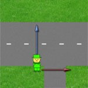

С указаниями регулировщика для пешеходов дело обстоит немного сложнее, так как на перекрестке пешеход может переходить 2 дороги, то есть любой из пересекающихся потоков. В этом случае ориентироваться нужно опять-таки на положение тела инспектора.
Рассмотрим жесты регулировщика для пешеходов. Замечу, что на перекрестке пешеход может оказаться лишь в двух возможных

Пусть пешеходу из примера необходимо перейти проезжую часть по красной стрелке. Пешеход может переходить дорогу в следующих ситуациях:
На левой картинке руки регулировщика вытянуты в стороны и пешеход может двигаться по красной стрелке. Обратите внимание, что в данном случае траектория пешехода пересекается с траекториями автомобилей, поворачивающих направо, однако автомобили должны уступить дорогу пешеходу. Кроме того, регулировщик с вытянутыми в стороны руками может стоять к нам не только лицом, но и спиной. Движение в этом случае также будет разрешено. Движение по синей стрелке на первой картинке запрещено.
Рассмотрим правую картинку. На ней регулировщик расположен спиной к нам и его правая рука вытянута вперед. В данном случае также можно переходить дорогу по красной стрелке и нельзя по синей.
Обратите внимание, что если регулировщик стоит лицом к нам и его рука вытянута вперед, то движение пешехода по красной стрелке запрещено.